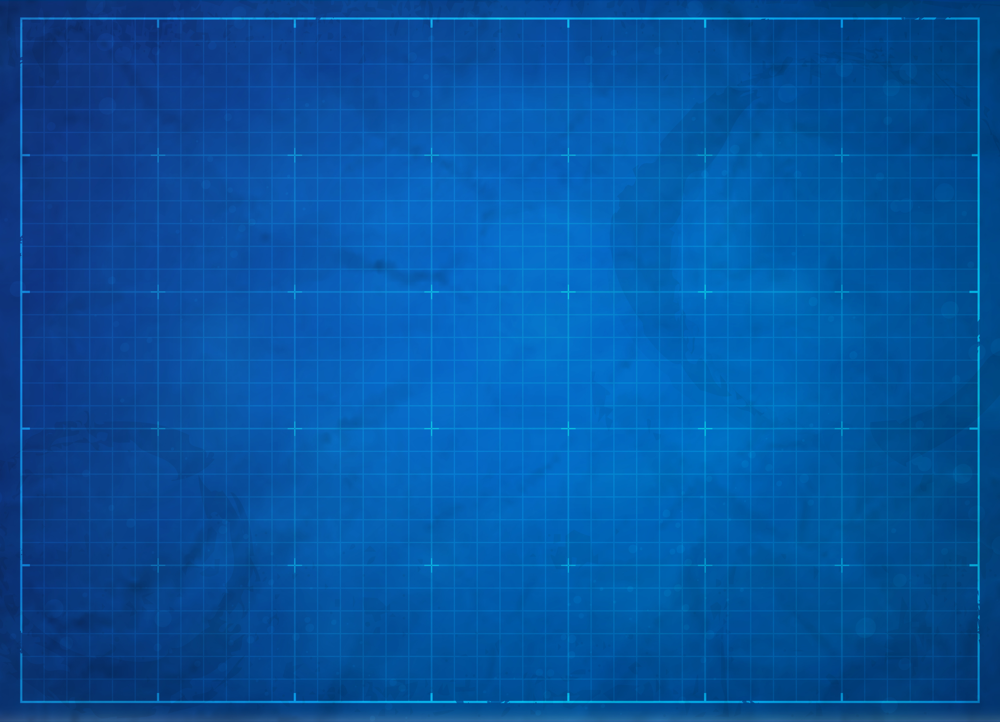
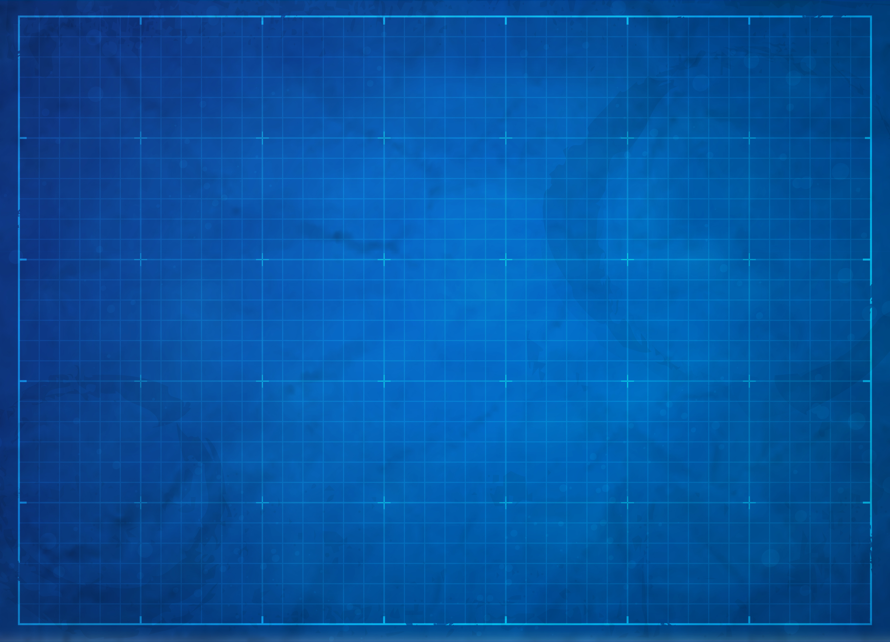

Colours
These are the style basis for colour-schemes throughout the site, to give the website a blueprint/work in progress look and feel to it, whilst still remaining asthetically complete.
Blueprint
Royal Blue
RGB:(48, 87, 225)
Royal Blue
RGB:(74, 109, 229)
Lavender Blue
RGB:(206, 216, 247)
Resolution Blue
RGB:(0, 32, 130)
Font
Black
RGB:(0, 0, 0)
White
RGB:(255, 255, 255)
Grey
RGB:(179, 179, 179)
Yellow
RGB:(255, 255, 0)


 
